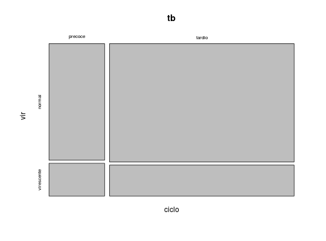
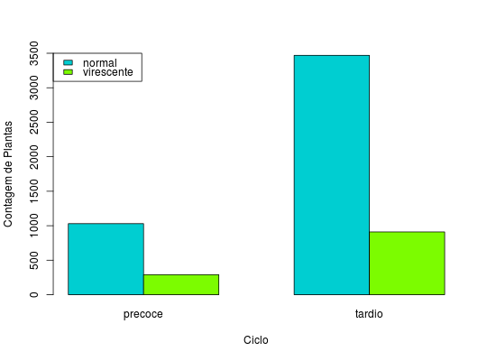

Experimento que tem por objetivo verificar se os caracteres ciclo e virescência, de uma progênie da espécie "X", segregam de forma independente.
Um data.frame com 4 observações e 3 variáveis, em que
ciclovircontAndrade, D. F., Ogliari, P. J. (2010). Estatística para as ciências agrárias e biológicas com noções de experimentação (2nd ed.). Florianópolis, SC. Editora da UFSC. (Tabela 2.11, pág. 80)
data(AndradeTb2.11) str(AndradeTb2.11)#> 'data.frame': 4 obs. of 3 variables: #> $ ciclo: Factor w/ 2 levels "precoce","tardio": 2 1 2 1 #> $ vir : Factor w/ 2 levels "normal","virescente": 1 1 2 2 #> $ cont : int 3470 1030 910 290(tb <- xtabs(cont~ciclo + vir, data= AndradeTb2.11))#> vir #> ciclo normal virescente #> precoce 1030 290 #> tardio 3470 910mosaicplot(tb)barplot(t(tb), beside = TRUE, legend.text = TRUE, args.legend = list(x = "topleft"), col = c("darkturquoise", "lawngreen"), ylim = c(0, 3500), xlab = "Ciclo", ylab = "Contagem de Plantas")